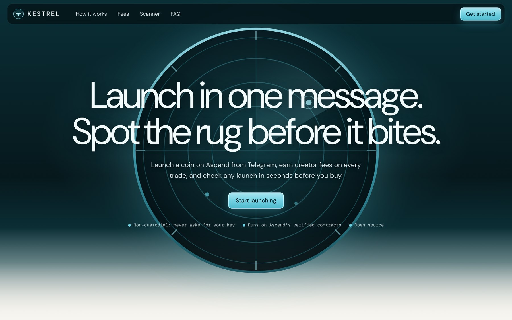

KESTREL
Launch in one message. Spot the rug before it bites.
A Telegram launcher and risk scanner for Ascend on Elysium
ASCEND BUILDER INCUBATOR · NOVEMBER 2026 · RYAN HADI
A Telegram launcher and risk scanner for Ascend on Elysium
ASCEND BUILDER INCUBATOR · NOVEMBER 2026 · RYAN HADI
01 · LAUNCHER
A coin from one Telegram message. No code, no dev buy.
02 · SCANNER
A plain-language risk card for every Ascend coin, not only ours.
03 · BUILDER FEE
Our only revenue, capped by Ascend, paid on trades that also pay Ascend.
coins launched on Ascend in about one hour. Creators showed up on day one.
Source: Kestrel reader · 40 most recent Ascend launches · Nov 9, 2026, ~03:40 UTC
of them came through a builder app. The builder lane on Ascend is open.
Source: builderFee = 0 on all 40 Launched events
The fee is set in a contract event most traders never open. A wallet shows the price, not the toll.
11 / 40
opted out of community takeover
13 / 40
included a dev buy
LAUNCHES BY CREATOR FEE
fee = creator fee tier · charged on buys and sells
CREATORS GIVE UP HALFWAY
Wallets, pair assets and fee settings stand between a community and its coin.
TRADERS BUY BLIND
Fees, dev buys and takeover opt-outs are all on-chain, but written in code.
WHAT THE CHAIN SAYS
Launched( poolId, token, creator, quote, supplySeeded, devBuyTokens = 2.06e25, fee = 100000, builderFee = 0 )
WHAT KESTREL SAYS
HIGH RISKExpensive to trade: 10% fee on every buy and sell.
Creator holds 2.06% of supply from the dev buy.
› set your wallet once
› no code, no gas from the creator
› no dev buy by default
› creator fees go to the creator's wallet
› simulated before anything is sent
Kestrel
bot
/launch KOPI "Kopi Nusantara" fee=2
Confirm launch
Kopi Nusantara ($KOPI)
Pair USDC · Fee 2% · Dev buy none
● $KOPI is live on Ascend · 0x7a3f…c91e
example coin · illustrative
| TICKER | FEE | DEV BUY | TAKEOVER | RISK |
| $HYPE | 8% | 18% | off | HIGH |
| $GPIX | 3% | 3.5% | on | MEDIUM |
| $KOPI | 2.5% | 0% | on | LOW |
example coins from the live site
rule-based: every flag maps to an on-chain field
Hyper Moon $HYPE
▲ Ticker copies a well-known asset. Likely a copycat.
▲ Creator holds 18% of supply from the dev buy.
▲ Expensive to trade: 8% fee on every buy and sell.
▲ No community takeover if the creator leaves.
01
Launch →
One message brings a creator and their community.
02
Scan →
Every coin gets a card, so buyers trust the platform.
03
Trade →
Buyers trade with the facts in hand.
04
Earn ↺
Fees reach the creator, who comes back to launch again.
ONE $1,000 TRADE ON A KESTREL COIN · 2% CREATOR FEE + 0.5% BUILDER FEE
$15
to the creator
$5
to Kestrel (builder fee)
$4.50
to Ascend protocol
$0.50
buys back the coin
At $1M traded on Kestrel coins: $15k to creators, $4.5k to Ascend, $5k to Kestrel. The builder fee is capped on-chain by Ascend's multisig, at most 1%.
Shares from Ascend's fee table, $40k–$1M market cap band · per-$1M figures illustrative

hadijayyy.github.io/kestrel
live scanner on Elysium mainnet
KESTREL DEFAULTS
KNOWN RISKS
Spam launches
Rate limits and the copycat filter.
Hot wallet
It pays gas only and holds a minimal balance.
No audit yet
A launch-flow review is the first line of the budget.
DAY
30
Live on mainnet
Bot live with /scan and alerts. First 25 coins launched through Kestrel.
DAY
60
Builder fee on
Approved builder fee live. 150 launches. 1,000-member alert channel.
DAY
90
More launch types
Holder Rewards and Buyback options. 500 launches. Public fee dashboard.
Measured by Kestrel's builder address on-chain · depends on builder approval and a reliable Elysium RPC
FOUNDER · INDONESIA (GMT+7)
AI automation specialist. I build data pipelines, LLM agents and bots for businesses. Kestrel applies the same skills to on-chain data: event ingestion, automated analysis and chat interfaces.
hadijayyy.github.io
Shipped on launch day
Scanner, bot and site ran against Elysium mainnet on its first day.
Close to the users
Native to the Indonesian and Southeast Asian Telegram communities Kestrel targets.
Open source
All code is public, so reviewers can check every claim.
+ builder approval
Builder approval
A builderFeeCap for Kestrel's address, so launches carry the builder fee.
Indexer access
Partner access to Ascend's indexer for scanner and alert volume.
Distribution
A mention in Ascend's ecosystem pages and announcements.
PROPOSED USE OF $15,000
Kestrel is an independent app built on Ascend's public contracts and is not affiliated with Ascend or Kinetiq. Data from Elysium mainnet, Nov 9, 2026. Per-$1M figures are illustrative.